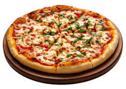

Pizza

Description
Pizza is a beloved Italian dish
that consists of a round, flat base of dough
topped with tomato sauce, cheese, and various toppings.
It's baked in an oven until the crust is crispy and the cheese is melted and bubbly.
Pizza is a versatile dish that can be customized with a wide range of toppings,
making it a favorite comfort food for people of all ages.
Ingredients
- 1 pizza dough (store-bought or homemade)
- 1/2 cup tomato sauce
- 1 1/2 cups shredded mozzarella cheese
- 1/4 cup sliced pepperoni
- 1/4 cup sliced mushrooms
- 1/4 cup sliced bell peppers
- 1/4 cup sliced onions
- 1 tablespoon olive oil
- Salt and pepper to taste
Steps
- Preheat oven to 475°F (245°C).
- Roll out pizza dough on a floured surface to your desired thickness. Transfer to a pizza stone or baking sheet.
- Spread tomato sauce evenly over the dough, leaving a small border around the edges.
- Sprinkle shredded mozzarella cheese over the sauce.
- Add your desired toppings (pepperoni, mushrooms, bell peppers, onions) evenly over the cheese.
- Drizzle olive oil over the top and season with salt and pepper.
- Bake in the preheated oven for 12-15 minutes or until the crust is golden and the cheese is bubbly.
- Remove from oven and let cool for a few minutes before slicing and serving.
home